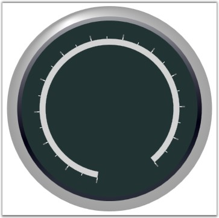

Two types of ticks can be added to the Circular Gauge scale; the Major Ticks which are the primary scale indicators and Minor Ticks which are the secondary scale indicators that fall between the major ticks. The tick style can be set by using the TickStyle property.
Following table lists the important properties that can be used to customize the Circular Mark Ticks. This is done to present the scale with meaningful markers and labels.
Table 7: Property Table
|
Property |
Description |
|
TickStyle |
To set the tick style for the circular mark tick. It includes the following options.
MajorTick MinorTick
Default value is MajorTick. |
|
TickShape |
To set the tick shape for the circular mark tick. It includes the following options.
Ellipse Rectangle Rounded Rectangle Triangle
Default value is Ellipse. |
|
TickHeight |
To set the tick height. Default value is 0. |
|
TickWidth |
To set the tick width. Default value is 0. |
|
DistanceFromScale |
Represents the distance that need to be maintained to present the ticks from scale. Default value is set to 0. |
|
Angle |
To set the angle rotation of ticks. Default value is set to 0. |
|
BackgroundBrush |
Used to set the background brush for ticks. Default value is Transparent. |
|
BorderBrush |
Used to set the border brush for ticks. Default value is Transparent. |
|
BorderWidth |
To set thickness of the border. Default value is set to 0. |
|
TickPlacement |
To set the placement for ticks. The options included are as follows.
Cross-draw in the middle of the scale. Inside-draw inside of the scale. Outside-draw outside of the scale.
Default value is Cross. |
|
RangedBrush |
Provides an alternate brush to the ticks (apart from the brush provided by the BackgroundBrush property) for a range specified by using the RangedBrushStartValue and RangedBrushEndValue properties. |
|
RangedBrushStartValue |
Specifies the start value from which the ticks should be painted with the alternate brush stored in the RangedBrush property. Default value is set to 0. |
|
RangedBrushEndValue |
Specifies the end value upto which the ticks should be painted with the alternate brush stored in the RangedBrush property. Default value is set to 0. |
Following code example illustrates how to add major and minor ticks to the Circular Scale.
|
[XAML]
<syncfusion:CircularGauge Radius="170" Name="circularGauge1" FrameType="FullCircle">
<!-- Scales which are already added--> <syncfusion:CircularGauge.Scales> <syncfusion:CircularScale Name="CircularScale" Minimum="0" Maximum="240" ScaleBarSize = "10" ShadowOffset="1" Radius = "116" BorderWidth = "0.2" BorderBrush="Gray" BackgroundBrush="LightGray" MinorIntervalValue="10" MajorIntervalValue="20" StartAngle="100" GapSweepAngle="310">
<!--Adding Mark ticks--> <syncfusion:CircularScale.Ticks>
<!--Adding circular major mark ticks--> <syncfusion:CircularMarkTick TickHeight="9" TickShape="Rectangle" TickStyle="MajorTick" Name="CircularMajorTick1" TickPlacement="Outside" TickWidth="2" BackgroundBrush="Gray"/>
<!--Adding circular minor mark ticks--> <syncfusion:CircularMarkTick TickHeight="4" TickWidth="1" TickStyle="MinorTick" Name="CircularMinorTick1" BackgroundBrush="White" TickPlacement="Outside"/> </syncfusion:CircularScale.Ticks> </syncfusion:CircularScale> </syncfusion:CircularGauge.Scales> </syncfusion:CircularGauge > |
|
[C#]
private CircularGauge circularGauge1; private CircularScale m_scale;
// Initializing the Circular Gauge. circularGauge1 = new CircularGauge(); m_scale = new CircularScale();
// Adding Scale. m_scale.ShadowOffset = 1; m_scale.Minimum = 0; m_scale.Maximum = 100; m_scale.MinorIntervalValue = 2; m_scale.MajorIntervalValue = 10; m_scale.StartAngle = 120; m_scale.GapSweepAngle = 300; m_scale.ScaleBarSize = 1.5; m_scale.Radius = 90; m_scale.BorderWidth = 1.2; m_scale.BorderBrush = Brushes.PeachPuff; m_scale.BackgroundBrush = Brushes.Plum; this.circularGauge1.Scales.Add(m_scale);
// Adding Major Tick. CircularMarkTick majorTick = new CircularMarkTick(); majorTick.TickWidth = 5; majorTick.TickHeight = 10; majorTick.TickStyle = TickStyle.MajorTick; majorTick.BackgroundBrush = new SolidColorBrush(Color.FromRgb(125, 0, 38)); majorTick.TickShape = TickShape.Ellipse; m_scale.Ticks.Add(majorTick);
// Adding Minor Tick. CircularMarkTick minorTick = new CircularMarkTick(); minorTick.TickWidth = 1; minorTick.TickHeight = 4; minorTick.TickStyle = TickStyle.MinorTick; minorTick.BackgroundBrush = new SolidColorBrush(Color.FromRgb(0, 59, 137)); m_scale.Ticks.Add(minorTick);
// Adding Scale in Gauge. circularGauge1.Scales.Add(m_scale);
this.Content = circularGauge1; |

Figure 30: Mark Tick in Circular Scale
 Note: For implementing the ticks, you should
already have the scale in which we are going to add the ticks.
Note: For implementing the ticks, you should
already have the scale in which we are going to add the ticks.
See Also
Circular Gauge, Circular Range, State Indicator, Custom Label and Image